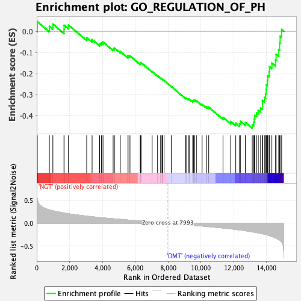

| | | Dataset | Diabetes_collapsed_symbols.Diabetes.cls#NGT_versus_DMT |
| Phenotype | Diabetes.cls#NGT_versus_DMT |
| Upregulated in class | DMT |
| GeneSet | GO_REGULATION_OF_PH |
| Enrichment Score (ES) | -0.46065986 |
| Normalized Enrichment Score (NES) | -1.8680975 |
| Nominal p-value | 0.0 |
| FDR q-value | 0.75977033 |
| FWER p-Value | 0.636 |
Table: GSEA Results Summary

Fig 1: Enrichment plot: GO_REGULATION_OF_PH
Profile of the Running ES Score & Positions of GeneSet Members on the Rank Ordered List
| PROBE | DESCRIPTION
(from dataset) | GENE SYMBOL | GENE_TITLE | RANK IN GENE LIST | RANK METRIC SCORE | RUNNING ES | CORE ENRICHMENT | | 1 | ATP6V0A2 | na | | | 33 | 0.535 | 0.0463 | No |
| 2 | ATP6V1D | na | | | 770 | 0.294 | 0.0238 | No |
| 3 | SLC26A6 | na | | | 984 | 0.274 | 0.0344 | No |
| 4 | ATP6V1G1 | na | | | 1662 | 0.222 | 0.0094 | No |
| 5 | CLCN3 | na | | | 1667 | 0.222 | 0.0292 | No |
| 6 | RAB20 | na | | | 1933 | 0.207 | 0.0303 | No |
| 7 | CXorf21 | na | | | 3045 | 0.155 | -0.0298 | No |
| 8 | PDK2 | na | | | 3373 | 0.142 | -0.0388 | No |
| 9 | ATP6V1B1 | na | | | 3833 | 0.124 | -0.0582 | No |
| 10 | SLC26A4 | na | | | 3941 | 0.120 | -0.0545 | No |
| 11 | ATP6V1E1 | na | | | 4038 | 0.117 | -0.0503 | No |
| 12 | SLC4A4 | na | | | 4655 | 0.096 | -0.0827 | No |
| 13 | SLAMF8 | na | | | 4735 | 0.094 | -0.0794 | No |
| 14 | ATP6V0A4 | na | | | 5090 | 0.084 | -0.0955 | No |
| 15 | CCKBR | na | | | 5561 | 0.069 | -0.1206 | No |
| 16 | VPS33A | na | | | 5562 | 0.069 | -0.1143 | No |
| 17 | ATP6V0B | na | | | 5681 | 0.066 | -0.1162 | No |
| 18 | ATP6V1F | na | | | 6308 | 0.046 | -0.1538 | No |
| 19 | BCL2 | na | | | 6323 | 0.046 | -0.1506 | No |
| 20 | AVPR1A | na | | | 6360 | 0.045 | -0.1488 | No |
| 21 | ATP6V1B2 | na | | | 7032 | 0.027 | -0.1912 | No |
| 22 | RAB38 | na | | | 7362 | 0.018 | -0.2115 | No |
| 23 | ATP6V1C1 | na | | | 7548 | 0.013 | -0.2227 | No |
| 24 | SLC9A8 | na | | | 7630 | 0.010 | -0.2272 | No |
| 25 | DMXL1 | na | | | 7673 | 0.009 | -0.2292 | No |
| 26 | ATP6V0A1 | na | | | 7674 | 0.009 | -0.2284 | No |
| 27 | SLC11A1 | na | | | 7759 | 0.006 | -0.2334 | No |
| 28 | NOX1 | na | | | 8195 | -0.006 | -0.2618 | No |
| 29 | TTPA | na | | | 9071 | -0.032 | -0.3174 | No |
| 30 | AVP | na | | | 9101 | -0.033 | -0.3163 | No |
| 31 | SLC9A2 | na | | | 9223 | -0.037 | -0.3211 | No |
| 32 | EDNRB | na | | | 9289 | -0.039 | -0.3219 | No |
| 33 | SLC4A7 | na | | | 9508 | -0.045 | -0.3324 | No |
| 34 | MAFG | na | | | 9518 | -0.045 | -0.3289 | No |
| 35 | PPT1 | na | | | 9559 | -0.046 | -0.3274 | No |
| 36 | SLC9A1 | na | | | 9616 | -0.048 | -0.3268 | No |
| 37 | SLC4A1 | na | | | 9728 | -0.051 | -0.3295 | No |
| 38 | TP53 | na | | | 10076 | -0.063 | -0.3470 | No |
| 39 | ATP6V1G2 | na | | | 10349 | -0.073 | -0.3585 | No |
| 40 | SLC4A10 | na | | | 10479 | -0.078 | -0.3601 | No |
| 41 | SLC4A2 | na | | | 11349 | -0.107 | -0.4084 | No |
| 42 | SLC9A7 | na | | | 11817 | -0.126 | -0.4282 | No |
| 43 | RHCG | na | | | 12128 | -0.138 | -0.4363 | No |
| 44 | ATP6V1A | na | | | 12357 | -0.149 | -0.4380 | No |
| 45 | SLC4A3 | na | | | 12406 | -0.151 | -0.4275 | No |
| 46 | CA7 | na | | | 12711 | -0.167 | -0.4327 | No |
| 47 | ATP6V0D1 | na | | | 13131 | -0.192 | -0.4433 | Yes |
| 48 | ATP12A | na | | | 13224 | -0.198 | -0.4315 | Yes |
| 49 | MAPK1 | na | | | 13258 | -0.200 | -0.4156 | Yes |
| 50 | CA2 | na | | | 13284 | -0.202 | -0.3990 | Yes |
| 51 | GRN | na | | | 13387 | -0.209 | -0.3868 | Yes |
| 52 | MAPK3 | na | | | 13499 | -0.216 | -0.3747 | Yes |
| 53 | SLC9A6 | na | | | 13641 | -0.225 | -0.3637 | Yes |
| 54 | CLN6 | na | | | 13751 | -0.234 | -0.3498 | Yes |
| 55 | SLC9A5 | na | | | 13752 | -0.234 | -0.3286 | Yes |
| 56 | CFTR | na | | | 13871 | -0.244 | -0.3143 | Yes |
| 57 | SLC9A3 | na | | | 13943 | -0.252 | -0.2962 | Yes |
| 58 | ATP6V1H | na | | | 13977 | -0.255 | -0.2753 | Yes |
| 59 | TCIRG1 | na | | | 13994 | -0.257 | -0.2531 | Yes |
| 60 | CLN3 | na | | | 14061 | -0.262 | -0.2338 | Yes |
| 61 | ATP6AP1 | na | | | 14074 | -0.264 | -0.2107 | Yes |
| 62 | SLC4A5 | na | | | 14156 | -0.273 | -0.1915 | Yes |
| 63 | TM9SF4 | na | | | 14184 | -0.276 | -0.1683 | Yes |
| 64 | CLIC4 | na | | | 14327 | -0.294 | -0.1511 | Yes |
| 65 | EDN1 | na | | | 14552 | -0.326 | -0.1365 | Yes |
| 66 | CLN5 | na | | | 14585 | -0.331 | -0.1087 | Yes |
| 67 | ATP6V0C | na | | | 14745 | -0.365 | -0.0862 | Yes |
| 68 | SLC4A8 | na | | | 14797 | -0.378 | -0.0555 | Yes |
| 69 | SLC26A3 | na | | | 14828 | -0.385 | -0.0226 | Yes |
| 70 | PDK4 | na | | | 14922 | -0.417 | 0.0089 | Yes |
Table: GSEA details [plain text format]
Fig 2: GO_REGULATION_OF_PH
Blue-Pink O' Gram in the Space of the Analyzed GeneSet
Fig 3: GO_REGULATION_OF_PH: Random ES distribution
Gene set null distribution of ES for GO_REGULATION_OF_PH